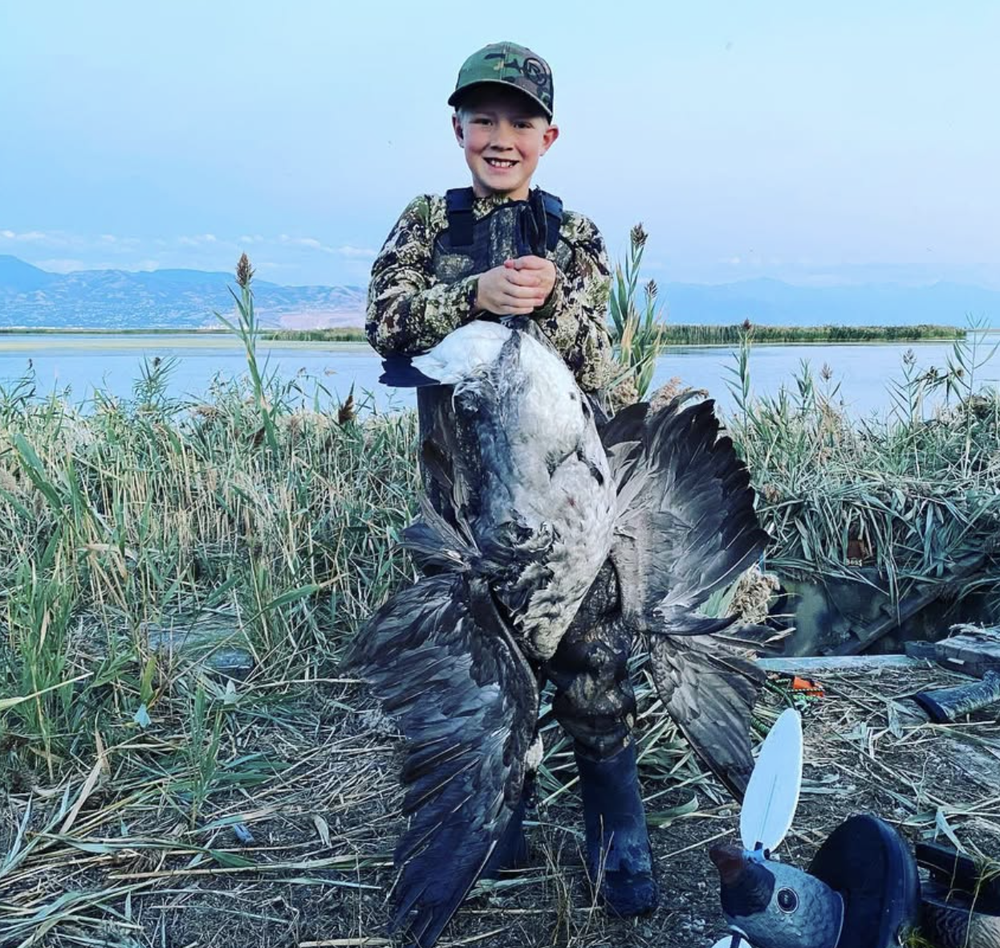

Episode 2 · April 27, 2023 · 1467
Tyce and his son Crew to talk hunting memories 2022

About This Episode
Tyce and his son Crew sit down and talk hunting stories from 2022. They talk about a duck hunt to Idaho and some turkey hunting in Utah and a little bit of info in between. Hope you enjoy!!
Questions about the training topics in this episode? Tyce works with bird dog owners and hunters through Utah Bird Dog Training. Reach out to work with him directly.
Resources & Links
- Utah Bird Dog Training — Work directly with Tyce — professional bird dog training services in Utah.
Transcript
Full transcript for Episode 2: Tyce and his son Crew to talk hunting memories 2022.
Tyce
Hello everyone. Welcome to the Bird Dog Podcast. Tonight we're sitting down in my basement. I have a bedroom that we have, a bunch of my mounts in.
We have, some turkeys and big game mounts all around us. And tonight I have a special person on the podcast, my one and only. One of my most favorite guys in the whole world. That's Crew Erickson, that's my son, my oldest son.
As I'm learning and practicing this whole podcast thing, I thought it'd be fun to have him on board and, and kind of get his take and, we'll, we'll kind of play with this and learn together. So thank you for listening to this podcast, and if you heard the first one, I guess thanks again for following us along as we get better at doing this and, and having some fun conversations about bird dogs and hunting and all the things that go, go along with that. crew, why don't you tell us a little bit about yourself?, my name is Kuen, like you heard. My favorite sports are like soccer and stuff, and, I like to do hunting a lot. Bird dog hunting.
It's pretty fun. Yeah. you know how much of a choice your dad being a, a dog trainer. So, yeah. how old are you? I'm 11 years old. 11 years old.
How old were you when you got your hunter safety? Do you remember that?, I think I was close to seven or eight. Yeah, I think you were close to, yeah, right around there. His dad I.
Pushed 'em as quick as I could. Cause I wanted 'em to join me in the field. And so as soon as they could read, we, we did the hunter safety, here in Utah, cuz there's not a, there's not an age limit when it comes to. it's a hunting,, small game in Utah, hunting birds and, and any everything minus big game. him and his sister both did it together and passed with flying colors. you guys, I was a little nervous when you went in and did your, I did your written test cause I didn't know if you guys had for sure passed. They didn't let the parents go in to help him out.
So I don't Did the instructor help you guys out a little bit or help you understand the questions?, from, from what I remember and I am pretty sure they did a little, but other than that it was pretty, yeah. Yeah. We, we had a good instructor. They were, they were pretty cool.
And I think they, I think some of the questions might have been kind of hard for you guys. Understand at your age, but he kind of simplified 'em. He kind of said like, he kind of broke it down, made it easier, and said, Hey, this is, this is, kind of what it means, and then these are the answers. What do you think?
Is that kind of what he did? Yeah, yeah. Pretty much. Like, I can't remember that good, but yeah.
When you're eight years old, you can't remember, can't remember a whole lot and. I guess that was, four years ago. 8, 9, 10. No, I guess three. Yeah, three and a half years ago.
So this crew will be 12, this September and, and this is the first year you can put in for big game in the state of Utah too. Yeah. So not only are we avid bird hunters, but we also love to hunt big game that. That's our other thing.
We, we, anything outdoors, we love it and love the love hunting and, and, and, and doing that. So what else can you tell us about your crew?, anything else you want the audience to know?, I like to ride a dirt bike. I think that's pretty fun. Mm-. in the summer we go on this track close to our house and my dad, we go do some jumps and stuff and, Go, go around and do that.
And fall, go get turkeys yeah. Tell, tell us about your tur crew is quite the Turkey slur. I think he, he shot probably close to many, as many turkeys as I have and, maybe, maybe it's cuz you got an awesome guide. Yeah, probably Yeah. crew's taken, how many turkeys have you shot?, you got one every.
Yeah, so I think maybe close, close to eight. I don't know. No, he shot so many can Yeah. Can't even keep track.
I can't even keep track either. He got, you got a nice Tom last year. Mm-. that was picture perfect. You want to kind of tell that story?, so we had, we had just packed up there and we had just like got everything like packed up.
Like not packed up, but like Got it ready, situated. and then we heard some turkeys over to the left, like kind of behind us. Mm-. And then after we just looked back and then Tom was just right there like, just like full strut. Mm-. and just like picture perfect.
Didn't, it was pretty good. Got him. And one shot didn't have to, So, yeah, it was, it was pretty awesome. We, I had scouted this place out and it was close to our home, and we went up there and, and, and got in there before light.
Right. And, And didn't know exactly where the birds were roosting, but I knew this, there's kind of a strutting ground. and figured they'd come in there at some point of the day if we were a patient. So I went in the night before and set up, did we or did I set up a blind the night before? Did we set up that morning?, we set up that morning, I'm pretty sure.
Yeah, we set up that morning. But we'd, we'd set a blind up there before, so we kind of knew where it was at. And then, man, right at first light, those turkeys started gobbling from the roost. And this is on the youth hunt.
So they get about two, two days before, two or three days. I can't remember exactly. I think it's two days before the general season adult hunt starts. And, that those birds, we, I could hear 'em gobbling as it got light.
I saw 'em, I could see 'em back at the top of these trees. And, and they pitched off those trees and came, landed on the backside of the hill that we were on. And, and we were watching those hens. Do you remember that the hens came outta the he, yeah.
The, the hand side, yeah. Coming out. And then we washed him for quite a bit. And wasn't there another tom with him?
He was like a. Jake, or, yeah, I don't, I don't remember that. I remember just seeing, I just remember there were a bunch of hens on that hillside. Yeah, probably I don't think he wanted many other birds around him, but yeah, he was.
So we saw those, we saw those hens on that hillside, and then, And then both of us also, we looked down and at our decoys, and we didn't even, he came in so fast on a string. Mm-. he came in and, and, he was full strut right around our Jake Decoy. We had a, we had a Jake. two hens, I'm pretty sure. No.
Yeah. Jake and two, hes, we had a hen that was laying down, looked like she was gonna be bred, and then we had another one that was kind of feeding and he thought that Jake was going to take one of his girlfriends and so he came down, was puffed up. And remember what gun you were shooting? Yeah, it was the, it was a four 10, I'm pretty sure.
Mm-. It was a four 10 little single shot That's the first gun that you've that you really, yeah. I guess you learned on and you could kind of shoot, shoot at your size, so, and yeah. And yeah, one shot one shot and he went down, huh?
Yeah. what I remember. Yeah. He was, he was full strut and crew pulled up and, and, snuck the barrel out of the blind and took the shot and, and down he went. And he was a big, he had a big old beard on him.
Yeah. He. Yeah. We got it on film and everything, so that was, that was pretty cool. so yeah, he, yeah.
We love to Turkey hunt around here. I mean, it basically, if it's in season, we like to hunt it. Right. Yeah. anything else you want to talk about, about yourself?
Mm. You can think of No, So, Cruz's been a, he's been a good sport. When I go hunting, He's good at coming along and I drag him along on all of his ventures. He also shot his first deer this this year.
Oh yeah. Up in Idaho. He shot a real nice. I shot a real nice four point buck, with a a six five Grundle.
Made a great shot on it, about 350 yards. He, the gun was kind of shooting off a little bit. We, we had messed up on dialing the turret and he shot it, hit it right in the head, but it went down, it went down real quick, huh? Yeah. and we, and the meat didn't get touched, so that was nice.
So you came along, how many times did you go duck hunting with me this year? Did you just get out the one time?, I'm pretty sure. Yeah. Just the one time just, did we go jump shooting?
Did you get out, jump shooting with me? How many times did we go out this year? I think once, maybe twice. So did we get any birds on those hunts?
Mm. Like. I think like only a couple. Only a couple of them.
Yeah, maybe. Yeah. I can't remember how many. Yeah, the jump shooting was pretty good this year.
I think in my, in the last podcast we did, I talked about that and, and how the, in November we had some pretty good shoots, but, But yeah. Later in the, later in the season, it kind of, it kind of seemed to slow down a little bit. Mm-. but crew, you ca you came with us on the last hunt of the season when we went up to a neighboring state, and got on the river and, and, got the boat out. Mm-. we'll just say we went up to Idaho.
So we probably don't have very many listeners listening to this, so we'll just stay where we went. So Idaho's a very big place. there's a lot of river systems in that state. And so went to Idaho. Had a great trip. we had got some intel from a friend that the birds were in, in a certain area, and we went up there and the, do you remember the first section of the river we went on?
Do you remember? Do you remember seeing much there? Mm. Not really.
No. Just thousands of cots. Yeah. So we saw thousands of cots and we took advantage of that, and you can shoot 25 a person.
So we, we, shot a handful of cots and let the dogs, we had some young dogs, that had never been on the river and been on that big water. And so, we're not above shooting coots and, and, using them for dog. And so that was fun getting some coots, but, but we really wanted the ducks, so we'd never been to these areas and, so it was fun kind of trying to learn the river and, and get the boat out and see what we'd come up with. So we got a lot of coots the first day and we weren't seeing a whole lot of ducks on the river.
Then there's some spots that are scattered here and there. Mm-. but it was kind of close to houses and stuff like that too. So we didn't really feel real comfortable shooting where some of the ducks were kind of sitting. So we ended up picking up and drove about 30 miles from that location, midday cuz we had about three days of hunting that we were planning on.
And we drove about 30 miles, like I said, and, jumped on the river and we started finding 'em. Huh. Yeah. So that evening we saw a bunch of birds coming. and, to a pocket.
And we, and we set up there and ended up shooting about, oh, I think we ended up with about 10 that afternoon. Mm-. Yeah. That we had, we had an awesome show.
The wes were just coming off some, some, some holding pond areas and just coming right onto the river and just, you remember them dropping down and Yeah, it was pretty cool. It was cool seeing 'em come down and, and, and they, they weren't really decoyed really good. I mean, it was the last, I think it was the last weekend of the season. So these birds have been they'd been hit pretty good.
But we brushed in good, had a good spread. we were able to still, knock down a handful of birds. So that was, that was fun. So that was the end of day one. day two we decided to go upriver a little further. Yeah. do you wanna tell.
Okay. Tell more about day two. Do you remember what you did then?, so day two we went up the river and was it the island that we saw, or was that day three? Oh, that was day two.
Yeah. Yeah, we went up, found this little island and then didn't we get onto it? Mm-. Well, we set up on that golden knives spot.
At first, I remember went up river scouting and it kind of, we saw less and less birds. We didn't see a ton of birds. Oh yeah. They kind of started, they kind of, I don't know.
They just weren't liking that part of the river. Yeah. further up the river. So we kind of came back to that island that we saw. Oh yeah.
Were kind of coming down. A bunch of birds came out from behind that island and Oh, yeah. Yeah. A bunch of divers and stuff like that. do you remember, do you want to tell him what we did after that?
So after we went to the island, what, how was the hunt when we set up on that?, because there were two islands we kind of set up before that first island. Then we went down to the other island that we hunted the third day in the morning. Oh yeah. Remember that?
Mm-. So the second island, or the last island? The first island we stayed, we went up around that kind of, and parked up on the backside of it with the boat. Oh. so we were in this little separate spot, I guess, and s some birds were coming through, but they usually just flew around the island on the main part of the channel.
Mm-. But we had quite a few that came around and we got a couple shots on some, but then we chose and picked up and went around to the second. Yeah, second, well, the first island we actually knocked down quite a few birds. That one on the bend, the gold, the golden ice.
A lot of divers kept coming up through and they came up on the bend and they'd kind of, it was pretty cool. They'd come up low right up around us, and this island kind of split the river. The main river was. You know, going up.
And then this one was kind of channeled out around the island and it was kind of calm. And we came down, we kicked a bunch of birds up off the backside of this island, so we figured it'd be good to set up in that area. So that's what we ended up doing. And then the golden eyes mostly shot all golden knives.
I think we only got one or two wigs. Yeah. And so we were, I can't remember how many birds we knocked down, but we decided, This trip again cuz we, this was a new place that we had that we were hunting. We thought it was kind of an exploratory trip too, just kind of learning the, learning the area and kind of trying to figure it out. so we cruised down river to some areas where we'd kind of seen a bunch of birds and then we found that next island and we thought we'd try there.
And this one was a little more in the middle of the river, so we were kind of hunting the. current of the river. And it was the problem with the river hunting. It was really deep in some places, but you really had to find a place where they, we could put the decoys out and the decoy strings, so that, would touch the ground so they wouldn't float away. So this island we jumped on to, and on the top of the island, someone had actually built a blind there.
Remember that? So we, yeah. So that was kind of fun. We put the boat around the backside and, and anchored it up kind of under some.
And then, and then actually sat on the land. We didn't hunt out of the boat on this one and. and I had a pretty good shoot on that island. But so we had, I, I don't know, they kind of, the days kind of seemed to blend together when you're hunting out there. Huh.
But that evening, I think we ended up shooting Good. I think right at, we were down to one more bird for our Olympic. Oh yeah. And it was like the last five minutes.
Shooting hours. Mm-. and I think a wedin came up the river and came into our decoys and we knocked him down. And so, so that was the end of the second day. So we took 21 birds.
Mm-. on that, on that second day. And that was cool to get a three man limit. Had some good dog work in that spot. It was bigger section of the river and some good swimming water.
And then the third day we woke up and, do you remember what we did? Didn't we go back to that island? Mm-. but then. The morning it was kind of slow.
Mm-. is that what mm-. And then didn't we go to another island or we just, yeah. So this, this time kind of blends together. The third morning we went to the same island cuz we had a pretty good shoot there.
And there was more people on the river. This was a Saturday. And, It was either the last weekend of the Hunter, there was a week left. I can't remember for sure.
It was, it was our last hunt of the season. But, so we ended up, there was a decent amount of boats, which we thought would be good cuz we thought we'd, they'd, it'd get the birds up and moving on the river. But, but they didn't. That morning we set up and it was slow.
I think we shot one or two birds and we were there for a couple hours. and, it was just kind of slow going. And so we decided to pack up. We said, well, let's go explore some other areas. So we had some guys tell us, don't go down river.
This, this area's really treacherous in a boat. And I think they were trying to keep us from, going to their honey hole or something like that. But we decided to go down river. So we cruised down river in the boat and, went around this whole, there was, a bunch of islands down in the river, down that area, and we found a spot on the backside, an island where, oh, there were a bunch of mallards and it was, it was interesting as we, as we shifted areas down the river, and it wasn't even that far down.
I mean, it was probably only a 10 minute boat ride. Just the habitat changed enough that we were getting more into mallards and getting more. our puddle, our ducks, and there were di lots of divers. But, we ended up, pulling on the backside of this island and it was pretty much a steady stream, that whole morning. Right?
Yeah. So it was really cool. We kind of were on a tight bend on the island and so these birds would kind of come up this shoot and they'd see, they'd see our decoys and they'd come around that bend tight and they were right in our lap and we had some decoy right in, and some kind of come down to the decoys and pass. And at one point they were.
Some of 'em came right in. Good. But some of 'em were also kind of swinging the opposite side of the little river. So at one point, crew went across the river and sat on the bank we were kind of pushing 'em, the ones that kind of were riding that far edge of the bank.
He was shooting 'em and yeah, he had a good shot on that one. Green head. Yeah. For that one.
I don't know if we weren't paying attention or what, or we were watching it and he pulled up. He was, You start off, he, we brought the four 10 and then we also had the 20 gauge. And then as he got more comfortable with the 20 gauge, he's like, all right, I'm done with this four 10 He wanted those extra shots. he ended up doing a great job, knocked down a nice green head on his own, and had some other great shots. I can't remember the, again, they all kind of blend together.
We ended up shooting a three man limit and I think we were done by one o'clock, probably about one or two o'clock. Two o'clock, I'm pretty sure. Two o'clock. Yeah.
We didn't, we didn't get any geese on those three days. We saw, we saw decent amount of goose flying around. I think we, we had some shots. But nothing real good in range.
And we didn't have any goosey quays out either, but the geese didn't really want to, I think they knew the river was kind of a, a danger zone, so they were more hit in the field and, and, we did scare some up off the river, but yeah. But they weren't coming down as much. so yeah, that was kind of our trip up to Idaho is a, it was a great time seeing some birds and they had more water than we did with all the drought. The drought here in Utah. other parts of the state. There, were areas you could put a boat in, but this year was pretty tough.
So we had to go up to Idaho to get the boat in on the river. see, yeah, I think that was kind of our three day trip up there. Yeah. Anything you could share with the listeners it would, that you recommend or learned or anything like that on that hunt? Well, even if it's slow doesn't mean there aren't birds there.
I'll just say that. Yeah, yeah, yeah. That's true. Just kind of be always ready.
Yeah, yeah, yeah. Be ready and, yeah. I, I like the saying, I always will tell myself or sometimes always expect the unexpected. Mm-. so when you're hunting, you're hunting, it can change just like that.
Yeah. So you wanna, if you're hunting big game or you're hunting ducks or anything like that, or pheasants, it's that time when you get lazy and you kind of. you know, you put your guard down, that's when a duck comes in, or, or, that's, that's when things happen. So so always expect the unexpected if you're always ready. you can capitalize on some moments when you might not have been ready. Right?
Yeah. so yeah, that was fun. I thought that was really fun exploring that area. I'd like to get up there next year and do it again. Mm-. and check it out.
I thought that was a really cool area that, that we'd explored and, and found a new honey hole. So hopefully the birds will always be in there and it'll always be a good hunt like that. I think it, I think it will be so, I dunno. Should we wrap it up?
Yeah. Okay. Yeah, we better get to bed. But yeah, grateful Crew came on to the podcast.
It was, it's fun having you. Yeah. And, and, and excited to do some future podcasts with you and, and talk about our upcoming hunts and, and everything that goes on. So thanks for letting me be here, Yeah, absolutely. okay, well until next time, everyone have a great night and, we'll be,
About the Host
Tyce Erickson
Tyce Erickson is a professional bird dog trainer and the owner of Utah Bird Dog Training in Utah. For nearly two decades he has worked with pointing dogs, retrievers, and family hunting dogs — helping owners build dogs that are capable and enjoyable in the field. The Bird Dog Podcast is an extension of that work: honest conversations on training, hunting, breeding, and everything that goes into a life spent working dogs.
More About Tyce